R data visualisation
updating…
GGPLOT
lecture 2
Plot gene expression data (repo: bla bla bla) you can add: tags, title, labels, subtitle, caption
#T1
ggplot(data=cancer_data, aes(x=age, y=g7F07)) + geom_point(aes(color=event_label)) + labs(x="Age", y="Expression (log2)", title="Gene expression of g7F07", subtitle = "On cancer patients", tag="A", color = "Event label") + theme_classic() + theme(panel.border = element_rect(colour = "black", fill=NA, size=1), axis.line = element_line(colour = "black", size=0), axis.text.x = element_text(face="bold", color="#000000"),
axis.text.y = element_text(face="bold", color="#000000"))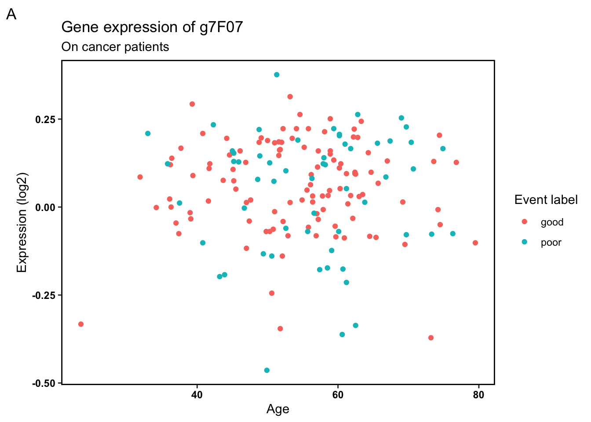
# T2
ggplot(data=cancer_data, aes(x=age, y=g7F07)) + geom_line() + theme_classic()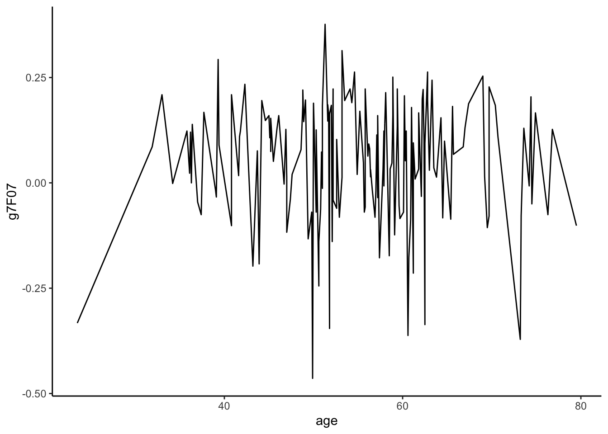
#T3
ggplot(data=cancer_data, aes(x=age_group, y=g7F07)) + geom_boxplot(aes(color=event_label)) + theme_classic()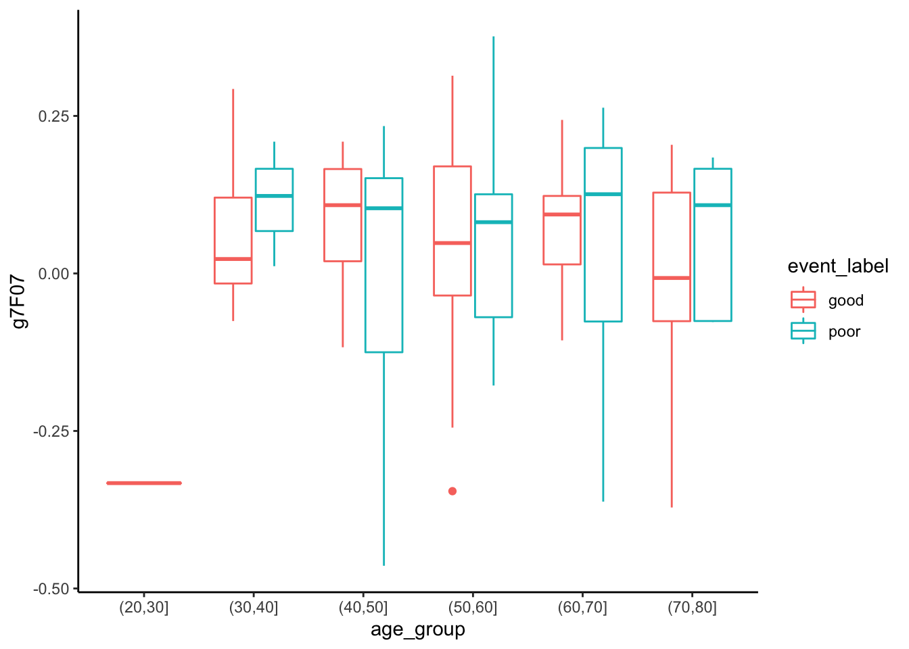
#T4
ggplot(data=cancer_data, aes(x=g7F07)) + geom_histogram() + theme_classic()## `stat_bin()` using `bins = 30`. Pick better value with `binwidth`.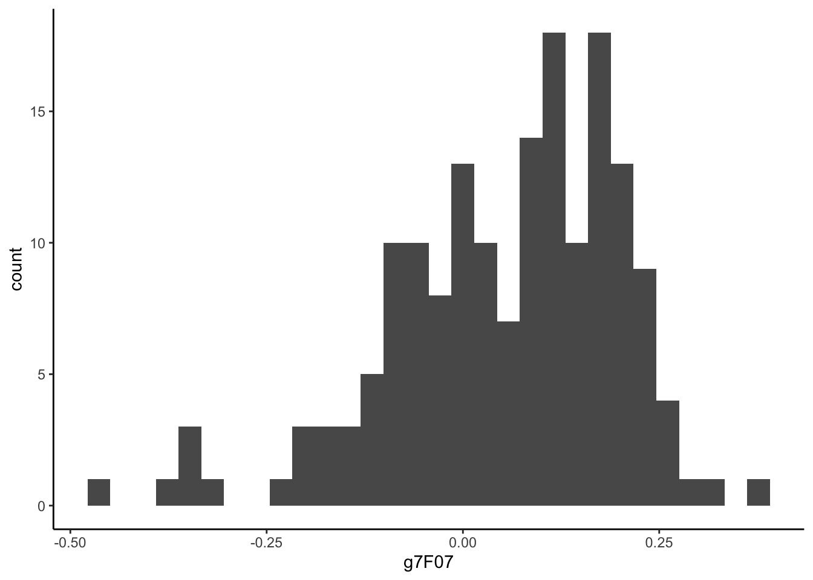
#T5
ggplot(data=cancer_data, aes(x=g7F07)) + geom_density(aes(color=event_label)) + theme_classic()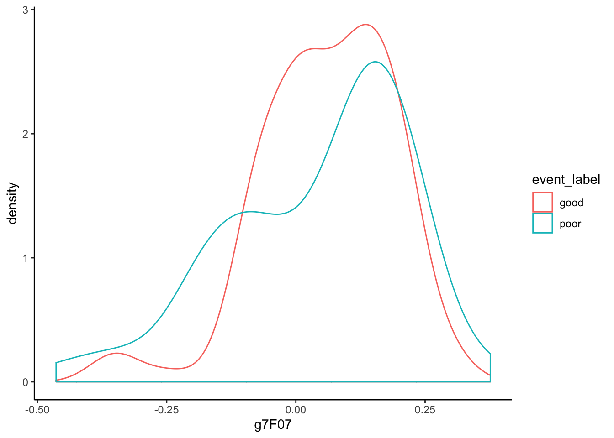
#T6
ggplot(data=cancer_data, aes(x=age_group, y=g7F07)) + geom_boxplot(aes(color=event_label)) + theme_classic()
#T7
ggplot(data=cancer_data, aes(x=g7F07)) + geom_density(aes(color=event_label)) + theme_classic()
#T8
ggplot(data=cancer_data, aes(x=age_group, y=g7F07)) + geom_violin(aes(color=event_label, fill=event_label), alpha=0.6) + geom_boxplot(aes(fill=event_label),color= "black", width=0.2,position = position_dodge(0.9)) + theme_classic()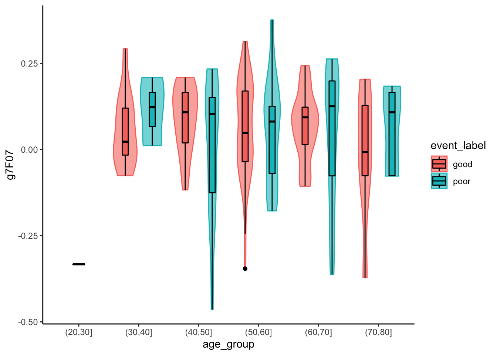
#T9
ggplot(data=cancer_data, aes(x=age, y=g7F07)) + geom_point(color="blue") + geom_smooth() + theme_classic()## `geom_smooth()` using method = 'loess' and formula 'y ~ x'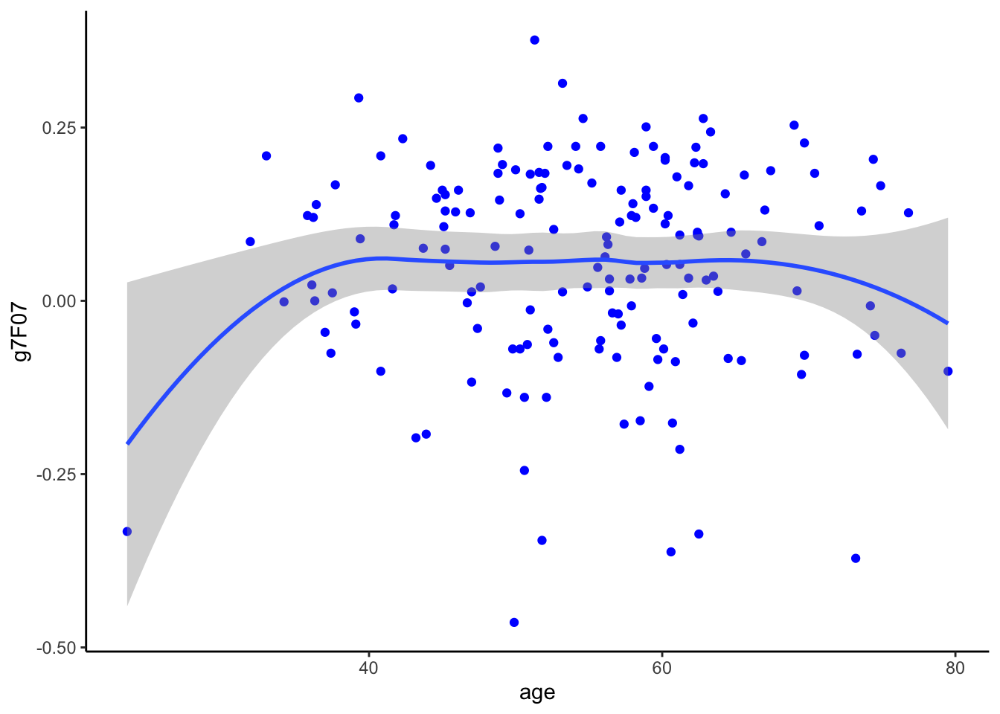
#labels ???
#T10
ggplot(data=cancer_data, aes(x=g2E09, y=g7F07)) + geom_point(color="blue") + geom_smooth() + facet_wrap(.~ age_group) + theme_classic()## `geom_smooth()` using method = 'loess' and formula 'y ~ x'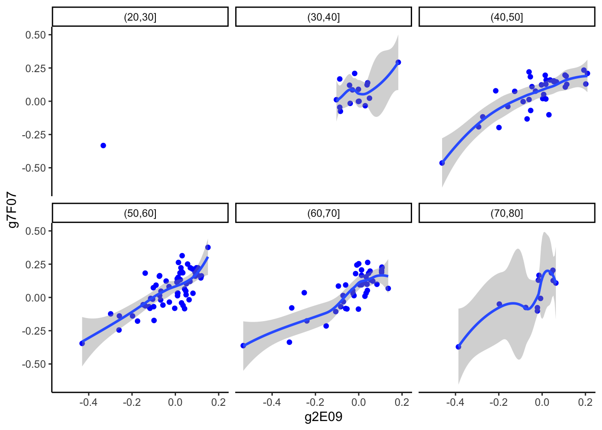
#T11
ggplot(data=cancer_data, aes(x=event_label,y=g1CNS507, color=event_label)) + geom_boxplot() + coord_flip() + theme_classic()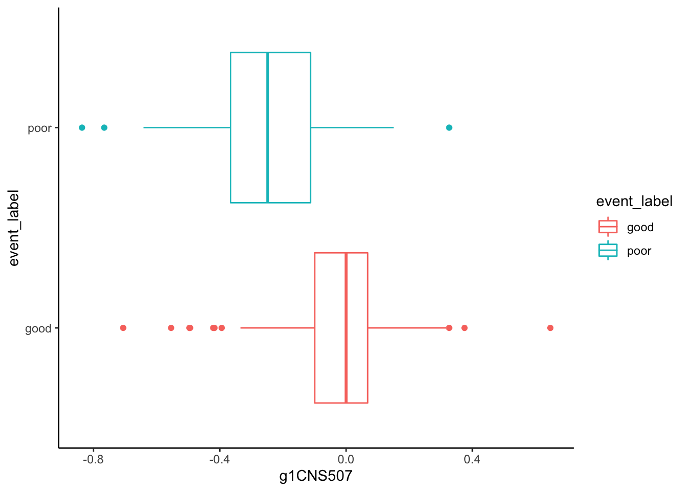
#T12
ggplot(data=cancer_data, aes(x=age, y= g1int239)) + geom_point(aes(color=event_label)) + geom_smooth(method="lm", se=FALSE, aes(color=event_label))+ theme_classic()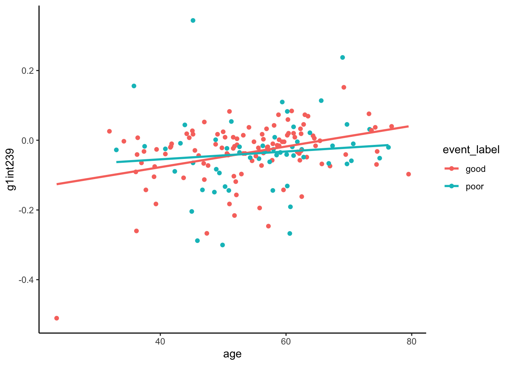
# filters your data depending on the rows
# arrange is sorting data in columns
# select selects the column
# mutate, add new variable to data set, predict
# summarize, summary metrics of a particular column, better used when the data is grouped. It does not change the data
# group_by, group by the columns
# %>% it is piping.
diabetes_data <- read_csv(file = "/Users/laurasansc/Desktop/BioinformaticsSystemsBiology/RforBioDataScience/data/diabetes.csv")## Parsed with column specification:
## cols(
## id = col_double(),
## chol = col_double(),
## stab.glu = col_double(),
## hdl = col_double(),
## ratio = col_double(),
## glyhb = col_double(),
## location = col_character(),
## age = col_double(),
## gender = col_character(),
## height = col_double(),
## weight = col_double(),
## frame = col_character(),
## bp.1s = col_double(),
## bp.1d = col_double(),
## bp.2s = col_double(),
## bp.2d = col_double(),
## waist = col_double(),
## hip = col_double(),
## time.ppn = col_double()
## )diabetes_data <- diabetes_data %>% mutate(height_cm=round((2.54*height),1))
diabetes_data <- diabetes_data %>% mutate(weight_kg=round((weight/2.205),1))
diabetes_data <- diabetes_data %>% mutate(waist_cm=round((2.54*waist),1))
diabetes_data <- diabetes_data %>% mutate(hip_cm=round((2.54*hip),1))
# count how many people weight less than 100kg
diabetes_data %>% filter(weight_kg < 100) ## # A tibble: 349 x 23
## id chol stab.glu hdl ratio glyhb location age gender height weight
## <dbl> <dbl> <dbl> <dbl> <dbl> <dbl> <chr> <dbl> <chr> <dbl> <dbl>
## 1 1000 203 82 56 3.60 4.31 Bucking… 46 female 62 121
## 2 1001 165 97 24 6.90 4.44 Bucking… 29 female 64 218
## 3 1003 78 93 12 6.5 4.63 Bucking… 67 male 67 119
## 4 1005 249 90 28 8.90 7.72 Bucking… 64 male 68 183
## 5 1008 248 94 69 3.60 4.81 Bucking… 34 male 71 190
## 6 1011 195 92 41 4.80 4.84 Bucking… 30 male 69 191
## 7 1015 227 75 44 5.20 3.94 Bucking… 37 male 59 170
## 8 1016 177 87 49 3.60 4.84 Bucking… 45 male 69 166
## 9 1022 263 89 40 6.60 5.78 Bucking… 55 female 63 202
## 10 1024 242 82 54 4.5 4.77 Louisa 60 female 65 156
## # … with 339 more rows, and 12 more variables: frame <chr>, bp.1s <dbl>,
## # bp.1d <dbl>, bp.2s <dbl>, bp.2d <dbl>, waist <dbl>, hip <dbl>,
## # time.ppn <dbl>, height_cm <dbl>, weight_kg <dbl>, waist_cm <dbl>,
## # hip_cm <dbl>diabetes_data %>% filter(weight_kg > 100) ## # A tibble: 53 x 23
## id chol stab.glu hdl ratio glyhb location age gender height weight
## <dbl> <dbl> <dbl> <dbl> <dbl> <dbl> <chr> <dbl> <chr> <dbl> <dbl>
## 1 1002 228 92 37 6.20 4.64 Bucking… 58 female 61 256
## 2 1253 234 65 76 3.10 4.67 Bucking… 47 male 67 230
## 3 1254 203 299 43 4.70 12.7 Bucking… 38 female 69 288
## 4 1280 232 87 30 7.70 5.10 Bucking… 37 male 68 252
## 5 1326 262 84 38 6.90 NA Bucking… 43 male 75 253
## 6 1501 243 52 59 4.10 4.41 Bucking… 37 female 64 233
## 7 2763 193 106 63 3.10 6.35 Bucking… 20 female 68 274
## 8 2778 443 185 23 19.3 14.3 Bucking… 51 female 70 235
## 9 3250 164 86 40 4.10 5.23 Bucking… 23 female 69 245
## 10 3751 180 84 69 2.60 5.20 Bucking… 40 female 68 264
## # … with 43 more rows, and 12 more variables: frame <chr>, bp.1s <dbl>,
## # bp.1d <dbl>, bp.2s <dbl>, bp.2d <dbl>, waist <dbl>, hip <dbl>,
## # time.ppn <dbl>, height_cm <dbl>, weight_kg <dbl>, waist_cm <dbl>,
## # hip_cm <dbl>diabetes_data %>% filter(weight_kg >100, height_cm < 160)## # A tibble: 2 x 23
## id chol stab.glu hdl ratio glyhb location age gender height weight
## <dbl> <dbl> <dbl> <dbl> <dbl> <dbl> <chr> <dbl> <chr> <dbl> <dbl>
## 1 1002 228 92 37 6.20 4.64 Bucking… 58 female 61 256
## 2 21254 191 155 58 3.30 8.06 Bucking… 31 female 62 237
## # … with 12 more variables: frame <chr>, bp.1s <dbl>, bp.1d <dbl>, bp.2s <dbl>,
## # bp.2d <dbl>, waist <dbl>, hip <dbl>, time.ppn <dbl>, height_cm <dbl>,
## # weight_kg <dbl>, waist_cm <dbl>, hip_cm <dbl>diabetes_data %>% filter(weight_kg >100, height_cm < 160)## # A tibble: 2 x 23
## id chol stab.glu hdl ratio glyhb location age gender height weight
## <dbl> <dbl> <dbl> <dbl> <dbl> <dbl> <chr> <dbl> <chr> <dbl> <dbl>
## 1 1002 228 92 37 6.20 4.64 Bucking… 58 female 61 256
## 2 21254 191 155 58 3.30 8.06 Bucking… 31 female 62 237
## # … with 12 more variables: frame <chr>, bp.1s <dbl>, bp.1d <dbl>, bp.2s <dbl>,
## # bp.2d <dbl>, waist <dbl>, hip <dbl>, time.ppn <dbl>, height_cm <dbl>,
## # weight_kg <dbl>, waist_cm <dbl>, hip_cm <dbl>diabetes_data %>% filter(gender == "female", height_cm > 180)## # A tibble: 4 x 23
## id chol stab.glu hdl ratio glyhb location age gender height weight
## <dbl> <dbl> <dbl> <dbl> <dbl> <dbl> <chr> <dbl> <chr> <dbl> <dbl>
## 1 1277 179 80 92 1.90 4.18 Bucking… 41 female 72 118
## 2 4506 217 81 60 3.60 3.93 Bucking… 22 female 71 223
## 3 15260 193 77 45 4.30 4.74 Bucking… 42 female 75 186
## 4 21357 122 82 43 2.80 3.98 Louisa 36 female 71 183
## # … with 12 more variables: frame <chr>, bp.1s <dbl>, bp.1d <dbl>, bp.2s <dbl>,
## # bp.2d <dbl>, waist <dbl>, hip <dbl>, time.ppn <dbl>, height_cm <dbl>,
## # weight_kg <dbl>, waist_cm <dbl>, hip_cm <dbl>diabetes_data %>% filter(gender == "male", height_cm > 180)## # A tibble: 51 x 23
## id chol stab.glu hdl ratio glyhb location age gender height weight
## <dbl> <dbl> <dbl> <dbl> <dbl> <dbl> <chr> <dbl> <chr> <dbl> <dbl>
## 1 1008 248 94 69 3.60 4.81 Bucking… 34 male 71 190
## 2 1304 265 330 34 7.80 15.5 Bucking… 61 male 74 191
## 3 1314 190 107 32 5.90 3.56 Bucking… 46 male 72 205
## 4 1315 173 80 57 3 6.21 Bucking… 57 male 71 145
## 5 1326 262 84 38 6.90 NA Bucking… 43 male 75 253
## 6 2795 171 92 54 3.20 4.59 Bucking… 40 male 71 214
## 7 3752 204 57 74 2.80 6.11 Bucking… 52 male 75 142
## 8 4517 217 88 40 5.40 4.84 Bucking… 34 male 73 219
## 9 4751 218 87 38 5.70 5.52 Louisa 40 male 73 200
## 10 4795 158 91 48 3.30 4.31 Louisa 50 male 71 180
## # … with 41 more rows, and 12 more variables: frame <chr>, bp.1s <dbl>,
## # bp.1d <dbl>, bp.2s <dbl>, bp.2d <dbl>, waist <dbl>, hip <dbl>,
## # time.ppn <dbl>, height_cm <dbl>, weight_kg <dbl>, waist_cm <dbl>,
## # hip_cm <dbl>diabetes_data %>% filter(location == "Louisa",age > 30, gender == 'female')## # A tibble: 95 x 23
## id chol stab.glu hdl ratio glyhb location age gender height weight
## <dbl> <dbl> <dbl> <dbl> <dbl> <dbl> <chr> <dbl> <chr> <dbl> <dbl>
## 1 1024 242 82 54 4.5 4.77 Louisa 60 female 65 156
## 2 1029 215 128 34 6.30 4.97 Louisa 38 female 58 195
## 3 1031 183 79 46 4 4.59 Louisa 40 female 59 165
## 4 1036 213 83 47 4.5 3.41 Louisa 33 female 65 157
## 5 1037 255 78 38 6.70 4.33 Louisa 50 female 65 183
## 6 4750 300 103 44 6.80 5.18 Louisa 61 female 67 169
## 7 4758 185 84 52 3.60 5.28 Louisa 53 female 61 145
## 8 4760 218 182 54 4 10.6 Louisa 51 female NA 215
## 9 4761 189 75 72 2.60 4.86 Louisa 49 female 62 205
## 10 4763 229 95 74 3.10 4.86 Louisa 65 female 62 151
## # … with 85 more rows, and 12 more variables: frame <chr>, bp.1s <dbl>,
## # bp.1d <dbl>, bp.2s <dbl>, bp.2d <dbl>, waist <dbl>, hip <dbl>,
## # time.ppn <dbl>, height_cm <dbl>, weight_kg <dbl>, waist_cm <dbl>,
## # hip_cm <dbl>diabetes_data %>% filter(location == "Buckingham",age < 30, gender == 'male',height_cm >190 )## # A tibble: 1 x 23
## id chol stab.glu hdl ratio glyhb location age gender height weight
## <dbl> <dbl> <dbl> <dbl> <dbl> <dbl> <chr> <dbl> <chr> <dbl> <dbl>
## 1 10000 185 76 58 3.20 4.83 Bucking… 23 male 76 164
## # … with 12 more variables: frame <chr>, bp.1s <dbl>, bp.1d <dbl>, bp.2s <dbl>,
## # bp.2d <dbl>, waist <dbl>, hip <dbl>, time.ppn <dbl>, height_cm <dbl>,
## # weight_kg <dbl>, waist_cm <dbl>, hip_cm <dbl>subset_diabetes1 <- diabetes_data %>% filter(location == "Louisa", age > 40)
ggplot(subset_diabetes1, aes(x=weight_kg, y=height_cm)) + geom_point(aes(color=gender))+scale_color_manual(values=c("#999999", "#E69F00")) + labs(x="Weight (kg)", y="Height (cm)", tag="A", color = "Gender") + theme_classic() + theme(panel.border = element_rect(colour = "black", fill=NA, size=1), axis.line = element_line(colour = "black", size=0), axis.text.x = element_text(face="bold", color="#000000"),
axis.text.y = element_text(face="bold", color="#000000"))## Warning: Removed 2 rows containing missing values (geom_point).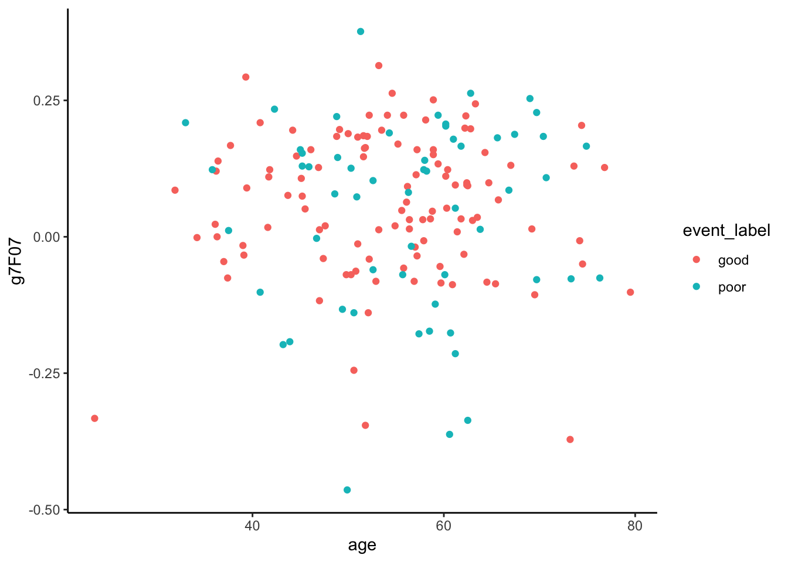
subset_diabetes2 <- diabetes_data %>% filter( age > 50)
ggplot(subset_diabetes2 , aes(x=location, y=height_cm)) + geom_boxplot(aes(color=gender)) +scale_color_manual(values=c("#999999", "#E69F00")) + labs(x="Location", y="Height (cm)", tag="A", color = "Gender") + theme_classic() + theme(panel.border = element_rect(colour = "black", fill=NA, size=1), axis.line = element_line(colour = "black", size=0), axis.text.x = element_text(face="bold", color="#000000"),
axis.text.y = element_text(face="bold", color="#000000"))## Warning: Removed 1 rows containing non-finite values (stat_boxplot).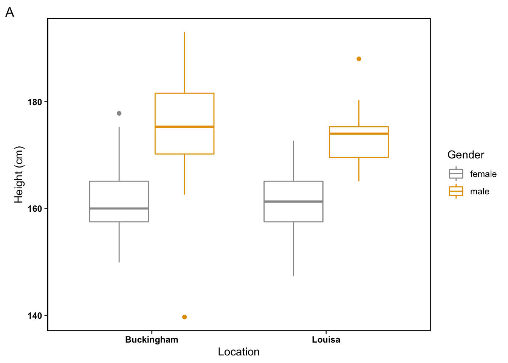
diabetes_data %>% summarise(age_min = min(age))## # A tibble: 1 x 1
## age_min
## <dbl>
## 1 19diabetes_data %>% summarise(age_max = max(age))## # A tibble: 1 x 1
## age_max
## <dbl>
## 1 92diabetes_data %>% filter(age == 20) %>% summarise(max_height = max(height_cm)) ## # A tibble: 1 x 1
## max_height
## <dbl>
## 1 183.diabetes_data %>% filter(age == 20) %>% summarise(min_height = min(height_cm)) ## # A tibble: 1 x 1
## min_height
## <dbl>
## 1 147.diabetes_data %>% select(starts_with("b"))## # A tibble: 403 x 4
## bp.1s bp.1d bp.2s bp.2d
## <dbl> <dbl> <dbl> <dbl>
## 1 118 59 NA NA
## 2 112 68 NA NA
## 3 190 92 185 92
## 4 110 50 NA NA
## 5 138 80 NA NA
## 6 132 86 NA NA
## 7 161 112 161 112
## 8 NA NA NA NA
## 9 160 80 128 86
## 10 108 72 NA NA
## # … with 393 more rowsdiabetes_data %>% select(contains("eight"))## # A tibble: 403 x 4
## height weight height_cm weight_kg
## <dbl> <dbl> <dbl> <dbl>
## 1 62 121 158. 54.9
## 2 64 218 163. 98.9
## 3 61 256 155. 116.
## 4 67 119 170. 54
## 5 68 183 173. 83
## 6 71 190 180. 86.2
## 7 69 191 175. 86.6
## 8 59 170 150. 77.1
## 9 69 166 175. 75.3
## 10 63 202 160 91.6
## # … with 393 more rowsdiabetes_data <- diabetes_data %>% mutate(BMI_class=(weight_kg/(height_cm/100)**2))
diabetes_data <- diabetes_data %>%
mutate(classification_BMI = case_when(BMI_class < 18.5 ~ "Underweight", 18.5 <= BMI_class & BMI_class < 24.9 ~ "Normal", 24.9 <= BMI_class & BMI_class < 29.9 ~ "Overweight",29.9 <= BMI_class & BMI_class < 34.9 ~ "Obesity type I", 34.9 <= BMI_class & BMI_class < 39.9 ~ "Obesity type I", BMI_class >= 39.9 ~ "Obesity type III"))
as.factor(diabetes_data$classification_BMI)## [1] Normal Obesity type I Obesity type III Normal
## [5] Overweight Overweight Overweight Obesity type I
## [9] Normal Obesity type I Overweight Obesity type III
## [13] Obesity type I Obesity type I Overweight Overweight
## [17] Obesity type I Normal Normal Obesity type I
## [21] Overweight Obesity type I Obesity type III Obesity type I
## [25] Normal Underweight Obesity type I Underweight
## [29] Overweight Overweight Overweight Normal
## [33] Normal Overweight Normal Obesity type I
## [37] Overweight Overweight Normal Obesity type I
## [41] Overweight Obesity type I Obesity type I Obesity type I
## [45] Overweight Obesity type III Overweight Obesity type I
## [49] Obesity type I Obesity type I Overweight Obesity type I
## [53] Obesity type I Overweight Obesity type III Obesity type III
## [57] Overweight Obesity type I Obesity type I Obesity type I
## [61] Obesity type I Normal Obesity type I <NA>
## [65] Normal Normal Overweight Overweight
## [69] Normal Normal Overweight Obesity type I
## [73] Overweight Obesity type III Underweight Overweight
## [77] Obesity type I Normal Obesity type I Overweight
## [81] Overweight Overweight Overweight Obesity type I
## [85] Overweight Overweight <NA> Obesity type I
## [89] Overweight Overweight Overweight Overweight
## [93] Normal Obesity type I Overweight Overweight
## [97] Overweight Overweight Obesity type I Obesity type I
## [101] Obesity type I Normal Obesity type I Overweight
## [105] Overweight Obesity type I Obesity type I Overweight
## [109] Normal Normal Obesity type I Obesity type I
## [113] Normal Overweight Normal Normal
## [117] Obesity type III Overweight Obesity type I Normal
## [121] Underweight Overweight Normal Overweight
## [125] Normal Overweight Obesity type I Normal
## [129] Obesity type III Obesity type I Normal Obesity type I
## [133] Overweight Overweight Obesity type III Normal
## [137] Normal Obesity type I Obesity type I Overweight
## [141] Obesity type I Normal Normal Overweight
## [145] Normal Normal Underweight Obesity type I
## [149] Overweight Normal Obesity type III Overweight
## [153] Overweight Overweight Obesity type I Obesity type I
## [157] Normal Overweight Obesity type I Obesity type III
## [161] Obesity type III <NA> Overweight Obesity type I
## [165] Normal Normal Overweight Normal
## [169] Overweight Normal Normal Obesity type III
## [173] Overweight Overweight Normal Normal
## [177] Obesity type I Obesity type III Obesity type I Overweight
## [181] Obesity type I Normal Overweight Overweight
## [185] Obesity type I Obesity type III Overweight Overweight
## [189] Obesity type I Obesity type I Normal Normal
## [193] Overweight Obesity type I Normal <NA>
## [197] Normal Obesity type III Obesity type I Normal
## [201] Normal Obesity type I Obesity type I Obesity type I
## [205] Underweight Obesity type I Normal Obesity type I
## [209] Overweight Overweight Normal Overweight
## [213] Obesity type I Normal Normal Normal
## [217] Normal Normal Normal Obesity type I
## [221] Normal Overweight Overweight Overweight
## [225] Obesity type I Normal Overweight Underweight
## [229] Obesity type I Obesity type I Overweight <NA>
## [233] Overweight Normal Obesity type I Overweight
## [237] Overweight Overweight Obesity type I Obesity type I
## [241] Obesity type I Obesity type I Normal Overweight
## [245] Overweight Overweight Normal Normal
## [249] Overweight Obesity type III Overweight Overweight
## [253] Obesity type I Overweight Normal Obesity type I
## [257] Obesity type III Normal Obesity type III Obesity type I
## [261] Obesity type I Obesity type I Normal Obesity type I
## [265] Overweight Obesity type I Normal Overweight
## [269] Obesity type I Normal Obesity type I Overweight
## [273] Normal Normal Obesity type I Underweight
## [277] Obesity type I Overweight Obesity type III Overweight
## [281] Overweight Normal Obesity type I Normal
## [285] Obesity type III Normal Overweight Normal
## [289] Normal Obesity type I Normal Obesity type I
## [293] Obesity type I Obesity type I Normal Normal
## [297] Normal Normal Obesity type III Obesity type I
## [301] Obesity type I Obesity type I Normal Obesity type I
## [305] Overweight Normal Normal Overweight
## [309] Obesity type III Normal Overweight Obesity type I
## [313] Overweight Normal Overweight Overweight
## [317] Normal <NA> Obesity type I Normal
## [321] Normal Overweight Normal Overweight
## [325] Overweight Normal Obesity type I Overweight
## [329] Obesity type III Normal Normal Overweight
## [333] Obesity type III Normal Overweight Normal
## [337] Overweight Obesity type I Overweight Obesity type I
## [341] Overweight Obesity type I Obesity type III Obesity type I
## [345] Obesity type I Obesity type I Obesity type III Overweight
## [349] Overweight Obesity type I Normal Obesity type I
## [353] Obesity type III Normal Obesity type I Overweight
## [357] Obesity type I Normal Obesity type I Overweight
## [361] Obesity type I Overweight Normal Obesity type I
## [365] Obesity type I Overweight Overweight Overweight
## [369] Overweight Normal Normal Obesity type III
## [373] Overweight Obesity type I Normal Normal
## [377] Obesity type I Overweight Underweight Normal
## [381] Overweight Overweight Obesity type I Obesity type I
## [385] Obesity type I Obesity type I Obesity type I Obesity type I
## [389] Normal Overweight Overweight Obesity type I
## [393] Normal Normal Obesity type I Normal
## [397] Overweight Normal Overweight Overweight
## [401] Normal Obesity type I Obesity type I
## Levels: Normal Obesity type I Obesity type III Overweight Underweightggplot(na.omit(diabetes_data), aes(x=classification_BMI, y=hdl)) + geom_boxplot() + labs(x="Body mass index category", y="Height (cm)", tag="A", color = "Gender") + theme_classic() + theme(panel.border = element_rect(colour = "black", fill=NA, size=1), axis.line = element_line(colour = "black", size=0), axis.text.x = element_text(face="bold", color="#000000"), axis.text.y = element_text(face="bold", color="#000000"))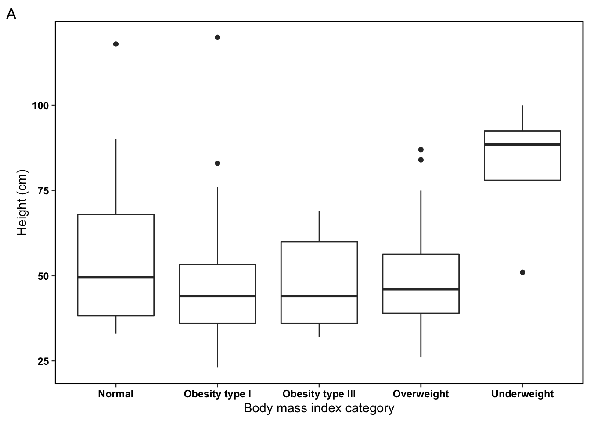
diabetes_data <- diabetes_data %>% mutate(gender_binary= case_when(gender == "female" ~ 0, gender == "male" ~ 1))
diabetes_data <- diabetes_data %>% mutate(BFP_class=(1.39*BMI_class + 0.16 * age - 10.34 * gender_binary - 9))
#other option
#diabetes_data <- if (diabetes_data$gender == "female"){
# diabetes_data %>% mutate(BFP_class=(1.39*BMI_class + 0.16 * age - 10.34 * 0 - 9))
#} else {
# diabetes_data %>% mutate(BFP_class=(1.39*BMI_class + 0.16 * age - 10.34 * 1 - 9))
# }